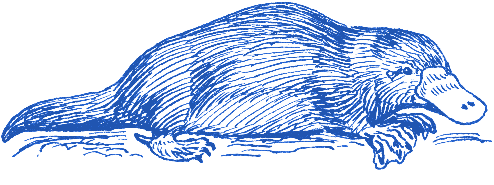

Platypus Blue
The platypus (Ornithorhynchus anatinus), also known as the duck-billed platypus, is a semiaquatic egg-laying mammal endemic to eastern Australia, including Tasmania.And also an art collective. Documentation to come.